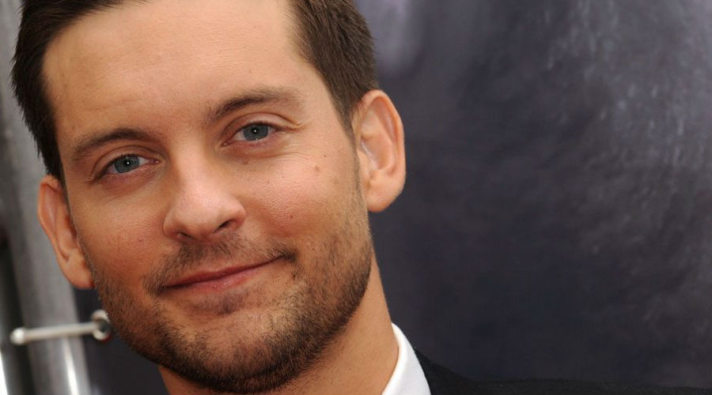

Звезды, о которых не подумаешь, что они вегетарианцы
Вегетарианство — известная, популярная и в то же время спорная система питания. Наверняка в вашем окружении найдутся те, кто отказался от мяса и вполне доволен своей жизнью. Есть такие люди и среди звезд Голливуда. Кто же это, и что заставило их выбрать подобный образ жизни.
Пол Маккартни
В жизни музыканта было несколько ситуаций, когда он всерьез задумывался о животных и ценности их жизни. Подростком Пол настраивался на то, что должен пойти в армию и научиться убивать. Чтоб перебороть в себе страх, юноша отправлялся в лес и тренировался на лягушках, считая, что это поможет стать ему солдатом. В какой-то момент Пол остановился, осознал дикость своих поступков и мысленно попросил прощения у всех лягушек. Вторая ситуация произошла на рыбалке. Музыкант, снимая рыбу с крючка, осознал, что убивает живое существо ради удовольствия, а жизнь рыбки так же важна, как и его собственная. Окончательным и убежденным вегетарианцем он стал благодаря своей жене Линде. Маккартни уверяет, что отказ от мяса спасает экологию, выпустил сборник вегетарианских рецептов и надеется, что когда-нибудь МакДональдс перейдет на вегетарианскую пищу.
Брэд Питт
Назвать актера приверженцем здорового образа жизни довольно сложно. Он не понаслышке знает, что такое курение и алкоголь, любит побаловать себя кофе и пиццей. Но при этом придерживается вегетарианства, о чем уверяют множество инсайдеров. Зато точно известно, что Анджелина Джоли не разделяет убеждений супруга. Много лет она была веганом, что подорвало ее здоровье, и звезда вернулась к обычному питанию. И, как шутит сама Анджелина, сочный стейк — секрет ее красоты.
Майк Тайсон
Самое неожиданное мы оставили на десерт! Сложно представить, как здоровенный спортсмен, мужчина и боец вместо большого стейка поедает морковку. Но это действительно так. Когда Майку было необходимо сбросить лишние килограммы, он выбрал вегетарианство. Такой режим питания, по словам боксера, сделал его спокойнее. Так что больше он не кусается и наркотики не употребляет.
Джаред Лето
Помните пухлого, мягкого говоря, Джареда в фильме «Глава 27»? А ведь сейчас звезда снова выглядит привлекательно и вовсе не тянет на свой возраст. Причиной всему, как вы уже догадались, стало вегетарианство. Как говорит сам актер, у него достаточно вредных привычек, но алкоголь и вредная еда — это не про него. А вегетарианства, кстати, он придерживается уже около 20 лет.
Натали Портман
Употребление мяса для Натали — это что-то варварское, вроде рабства или расизма, что в будущем будет шокировать наших потомков. Однако звезда никого не убеждает и не заставляет разделять свою точку зрения. Решив стать вегетарианкой, она сначала отказалась от мяса и рыба, потом перестала есть яйца, и молоко. А вот распрощаться с сыром было сложнее всего, но и с этим Натали справилась. Однако во время беременности она позволила себе немного разнообразить рацион: ей хотелось яиц и масла, и в своем положении звезда не стала отказывать себе. Что же заставило актрису отказаться от мяса? Профессия ее отца. Папа Натали — врач. Однажды, когда дочери было 8 лет, он взял ее с собой на конференцию медиков. Один из аппаратов демонстрировался специалистами на живом цыпленке. Впечатлительной девочке стало настолько плохо от подобного обращения с птичкой, что больше она никогда не пробовала мяса.
Пинк
Певица — ярый борец за права животных. Ее дерзкий и бунтарский характер проявляется не только в творчестве, но и в отстаивании своих убеждений. Говорят, она резко негативно относится к любителям мяса и натуральных материалов. Чтоб вы понимали смелость певицы, уточним: она не побоялась даже критиковать принца Ульяма за его участие в охоте и королеву Елизавету II за использование меха в обмундировании гвардейцев.
Джим Кэрри
Легендарный комик и актер, Джим Кэрри не всегда был поклонником вегетарианства. Все изменилось после того, как он сыграл главную роль в двух фильмах о детективе Эйс Вентуре. Актеру пришлось сниматься с животными и, скорее всего, именно его хвостатые коллеги по съемочной площадке заставили его измениться.
Тоби Магуайр

У актера явная склонность к вегетарианству: он не взлюбил животную пищу еще в детстве. Как вспоминает Тоби, съесть мясо для него было настоящим испытанием. В его тарелке мог лежать только идеальный кусок без жира, хрящей и костей, и то такой обед или ужин был не по нраву мальчику. Сейчас Тоби не есть не только мясо, но и яйца, молоко, сыр, а мед и молочный шоколад позволяет себе лишь изредка. Его вегетарианство, кстати, создало некоторые сложности при съемках «Человека-паука». В одной из сцен актер должен был съесть хот-дог, но поглощать сосиску категорически отказался. Пришлось подделывать ее из сыра тофу. Магуайр также не носит одежду из меха и кожи. Говорят, что гостей и друзей в свой дом в натуральной шубе или с крокодиловой сумочкой он не пустит.
Вегетарианцами также являются Мадонна, Адам Левайн, Гвинет Пэлтроу, Том Круз, Наталья Орейро, Ким Бейсингер, Алек Болдуин, Билл Клинтон, Энн Хэтэуэй, Блейк Лайвли, Наоми Уоттс, Оливия Уайлд, Леона Льюис, Джессика Честейн, Кристен Белл, Моби, Хоакин Феникс, Нелли Фуртадо, Монсеррат Кабалье, Елка, Ричард Гир, Ума Турман, Памела Андерсон, Эрик Робертс, Джулия Робертс, Николай Дроздов и Валерия Гай-Германика.